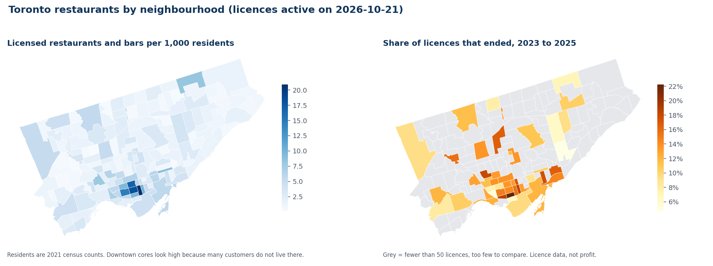
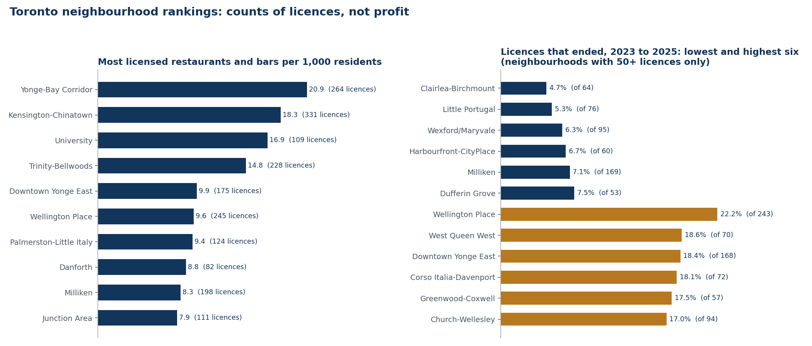

Read this first. The national benchmark on the project page comes from Statistics Canada and ISED financial data. Nobody publishes profit for a Toronto neighbourhood, so this page does not estimate it. It only counts licences: how many there are per resident, and how many ended. A licence ending is not always a failed restaurant (see the limits below).
Where they are, and where licences ended

Yonge-Bay Corridor has the most licences per resident (20.9 per 1,000, against 2.8 for the whole city). Downtown cores rank high partly because office workers and visitors eat there but do not live there, so the per-resident figure overstates how crowded they are for locals.

Among those 47, the share of licences that ended ranges from 4.7% (Clairlea-Birchmount) to 22.2% (Wellington Place). With 50 to 250 licences each, a few cases move these numbers, so treat gaps of a few points as noise.
Business improvement areas (the named shopping streets)
| BIA | Active licences | Live on 1 Jan 2023 | Ended 2023 to 2025 |
|---|---|---|---|
| Toronto Downtown West | 242 | 238 | 19.8% |
| Yonge North York | 186 | 177 | 13.0% |
| Downtown Yonge | 154 | 146 | 17.1% |
| Financial District | 147 | 130 | 17.7% |
| Old Town Toronto | 140 | 133 | 11.3% |
| Chinatown | 126 | 105 | 13.3% |
| Bloor-Yorkville | 116 | 110 | 15.4% |
| Danforth Mosaic | 111 | 106 | 13.2% |
| West Queen West | 106 | 98 | 12.2% |
| DuKe Heights | 105 | 94 | 11.7% |
The ten BIAs with the most active licences (BIAs with fewer than 50 licences are left out). BIA boundaries overlap neighbourhoods, so a licence counts in both.
Limits
- Not profit. There is no income, rent or cost data here. The 2.5% net margin on the main page is a national average and is not split by area.
- A cancelled licence is not always a closure. I only count a cancellation as a closure when no other licence starts at the same address and unit within 90 days. That still misses some owner changes, and it also misses restaurants that closed and were replaced within 90 days. Treat the rate as a way to compare areas, not as a true closure rate (the raw cancellation share was 31%).
- Placing licences is approximate. The licence file has no coordinates. 8,829 of 10,819 were placed by matching the street address to a DineSafe health-inspection premises, 1,728 at the average position of premises sharing their postal code (they can land in a neighbouring area), and 262 could not be placed and are left out.
- Only one licence type. I count "Eating or drinking establishment" licences. Take-out and retail food licences, food trucks and sidewalk cafes are separate categories and are not counted, and bars are included with restaurants.
- Old population data. Residents come from the 2021 census, and some neighbourhoods have grown a lot since.
- Most neighbourhoods are too small to rank. 111 of 158 have fewer than 50 licences, so their closure shares are not shown.
How I built it
- Python (pandas, shapely, matplotlib) reads three City of Toronto datasets and writes small CSVs to the
datafolder:toronto_neighbourhoods.csv,toronto_bia.csvandtoronto_match_summary.csv. The raw files are about 80 MB and are downloaded by a script rather than stored. - Licences come from the Municipal Licensing and Standards business licences file (snapshot taken 21 October 2026). Coordinates come from DineSafe. Boundaries are the City's 158 neighbourhoods and its BIAs. Population is the 2021 Neighbourhood Profiles.
- Code:
analysis/toronto_download.py,build_toronto.py,build_toronto_charts.pyandbuild_toronto_page.py.checks.pychecks that the numbers on this page match the CSVs.
Back to the national benchmark · Dashboard · Compare your restaurant